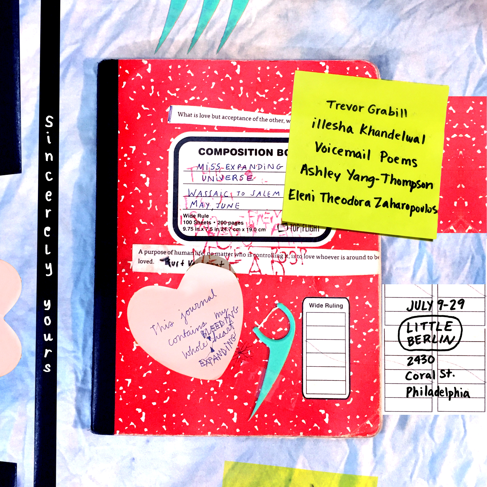

SINCERELY YOURS OPENING AND POETRY READING
July 2018
Saturday, July 14, 2018
Little Berlin presents an exhibition of un-edited journal pages, left-handed drawings, telephone poetry, wholesome woodcuts, collected objects and toilet-paper pranks. Romantic, painful, direct and sweet—these documents of creative exercise, poetic confessions and delicate installations are willing to be completely honest with you.
June 9–29, 2018
Opening Reception: July 14, 6-9pm
Poetry Reading organized by Amy Saul-Zerby: July 14, 7pm
Gallery Hours: Sundays 12–4 + by appointment
Featuring works by:
- Trevor Grabill
- illesha Khandelwal
- Voicemail Poems (Jamie Mortara + Amy Saul-Zerby)
- Ashley Yang-Thompson
- Eleni Theodora Zaharopoulos
Curated by Little Berlin member Cayla Lockwood
